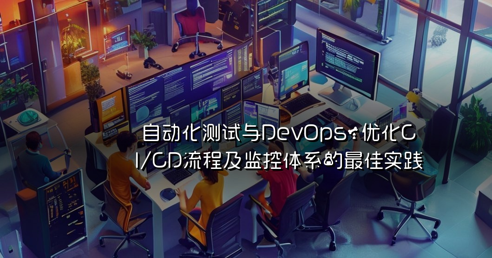

本文探讨了自动化测试与DevOps在CI/CD流程中的重要性，分析了实现最佳实践的策略，包括测试设计、工具选择、监控体系的构建等，旨在帮助团队提升软件交付效率和质量。
自动化测试与DevOps：优化CI/CD流程及监控体系的最佳实践
在现代软件开发中，自动化测试与DevOps已经成为了提升效率与软件质量的关键因素。随着敏捷开发和持续交付（Continuous Delivery, CD）的普及，企业越来越意识到在软件开发生命周期中，自动化测试的重要性，以及与DevOps文化的结合所带来的优势。本文将深入探讨如何通过自动化测试来优化CI/CD流程及监控体系，并分享一些最佳实践。
什么是CI/CD？
CI/CD是持续集成（Continuous Integration）和持续交付/持续部署（Continuous Delivery/Continuous Deployment）的缩写。CI/CD的核心思想是通过自动化流程来提高软件开发的效率和质量。持续集成强调开发人员频繁地将代码集成到主分支，并通过自动化测试确保代码的质量；而持续交付则确保所有的代码变更都可以在任何时间安全地部署到生产环境。
自动化测试的重要性
1. 提高测试效率
手动测试不仅耗时，而且容易出现人为错误。自动化测试能够在几乎没有人工干预的情况下快速执行大量测试用例，从而显著提高测试效率。通过将测试脚本与CI/CD流程集成，开发团队可以在每次代码提交后自动运行测试，确保代码的稳定性。
2. 提升软件质量
自动化测试可以覆盖更多的测试场景，包括单元测试、集成测试和端到端测试。通过系统化的测试，能够及早发现并修复漏洞，提升软件的整体质量。同时，自动化测试的重复性和一致性也有助于减少回归缺陷的发生。
3. 降低成本
虽然初期的自动化测试工具和脚本的编写可能需要投入一定的资源，但从长远来看，自动化测试能够显著降低测试成本。减少手动测试的需求，降低了人力成本，同时也缩短了发布周期，带来了更快的市场响应能力。
DevOps文化与实践
DevOps是一种文化、运动和实践，旨在促进开发（Dev）与运维（Ops）之间的协作。通过促进团队间的沟通和协作，DevOps能够帮助企业快速交付高质量的软件产品。
1. 跨职能团队
在DevOps文化中，开发、测试和运维团队通常会组成跨职能团队。这种结构不仅促进了团队成员之间的沟通，也使得每个团队成员都能对整个软件交付过程有更深入的理解。通过这样的方式，团队能够更快地响应变化，快速修复问题。
2. 持续反馈
DevOps强调从开发到生产的持续反馈。通过监控工具收集用户反馈和系统性能数据，开发团队可以迅速获得关于其产品的真实使用情况。这种持续反馈机制有助于快速迭代和改进产品。
3. 自动化工具链
DevOps的核心之一是自动化工具链的使用。工具链可以包括版本控制系统、构建工具、测试框架、CI/CD工具以及监控工具等。通过这些工具，团队能够实现快速的构建、测试和部署，从而提高整体开发效率。
优化CI/CD流程的最佳实践
1. 选择合适的自动化测试工具
选择合适的自动化测试工具对于CI/CD流程的成功至关重要。市面上有许多测试工具，如Selenium、JUnit、TestNG等，开发团队应根据项目需求和技术栈选择适合的工具。同时，也要考虑工具的学习曲线和社区支持。
2. 编写可维护的测试脚本
在编写自动化测试脚本时，务必要遵循代码的可维护性原则。测试脚本应简洁明了，遵循统一的命名规范和编码风格。此外，尽量避免代码重复，采用函数或类的方式进行重用，以便于后期的维护和更新。
3. 集成测试与持续集成（CI）
在CI/CD流程中，集成测试是确保各个模块能够正常协作的重要环节。通过在每次代码提交后自动运行集成测试，可以及时发现接口或模块间的兼容性问题，确保系统的一致性。
4. 设置合适的测试覆盖率
测试覆盖率是衡量自动化测试有效性的重要指标。团队应根据项目的复杂性和风险程度，合理设置测试覆盖率目标。通常，单元测试的覆盖率应达到70%以上，而集成测试和端到端测试的覆盖率则应根据具体情况进行调整。
5. 监控体系的构建
监控体系是确保CI/CD流程顺畅的重要组成部分。通过对构建、测试和部署过程进行实时监控，团队可以快速识别并解决潜在问题。常见的监控工具包括Prometheus、Grafana和ELK Stack等。通过这些工具，团队能够获得系统性能指标、错误日志和用户反馈等信息，从而为持续改进提供数据支持。
6. 反馈与迭代
在DevOps文化中，反馈与迭代是非常重要的环节。团队应定期召开复盘会议，讨论在CI/CD流程中遇到的问题和挑战，分享成功经验和教训。同时，基于监控数据和用户反馈，持续优化测试流程和工具链，确保在快速发展的环境中保持高效。
7. 持续学习与团队培训
在快速发展的技术环境中，团队成员需不断更新自己的知识和技能。企业应鼓励团队参加培训、研讨会和技术交流，以提升整体的技术水平和团队协作能力。
结论
自动化测试与DevOps的结合为CI/CD流程的优化提供了强有力的支持。通过选择合适的工具、编写可维护的测试脚本、建立监控体系以及促进团队协作，企业能够持续提升软件质量和交付效率。在这个快速变化的技术时代，拥抱自动化测试与DevOps文化，才能让企业在竞争中立于不败之地。希望本文能够为您的团队在自动化测试与DevOps实践中提供一些启示和帮助。